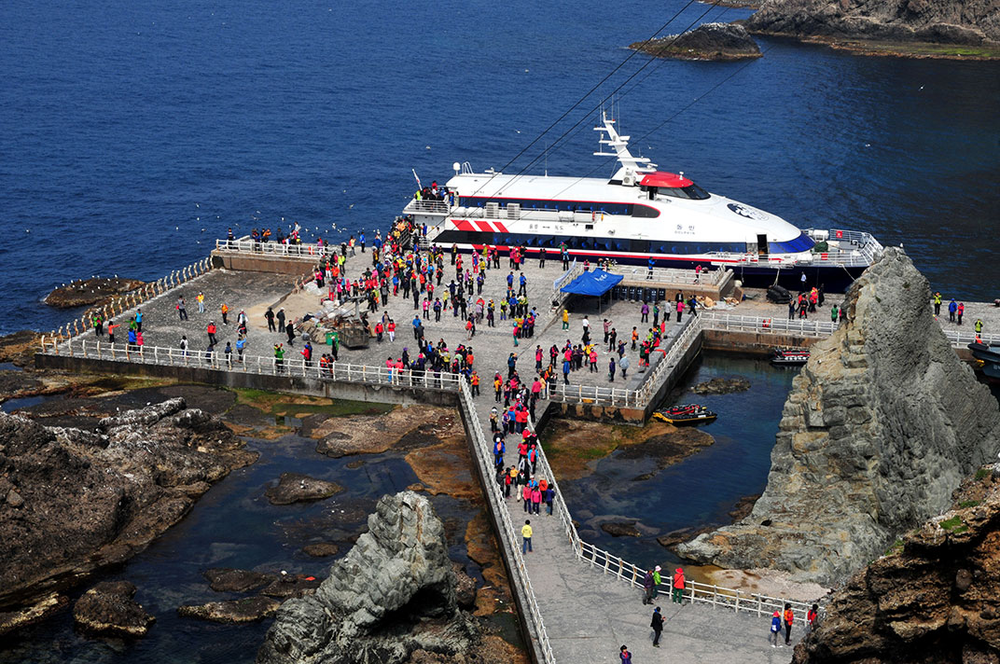

독도여행
독도는 우리나라 동쪽끝에 있는 섬이에요.
독도는 작은 섬처럼 보이지만 사실 거대한 화산섬의 꼭대기 랍니다.
독도 아래에는 넓고 큰 산이 펼쳐져 있어요. 또 울릉도와 제주도보다 먼저 화산활동으로 만들어진 섬이에요.

<대한민국 영토임을 알리는 독도표지석>
독도방문
울릉도에서 여객선으로 1~2시간정도 가면 독도에 도착할 수 있어요.
관광으로 머무를 수 있는 시간은 30분 정도인데 취재나 학술목적인 경우
울릉군에 별도로 신청해서 허가를 받으면 더 오래 머무를 수 있어요.

<독도선착장에 도착한 여객선>
유의사항
1. 출발전 여객선 회사에 연락하여 운항시간을 확인해야 합니다.
2. 날씨가 안좋으면 독도에 입항하지 못할수도 있어요.
3. 독도 관람구역은 선착장만 가능합니다.
<©Designed by 홍길동>